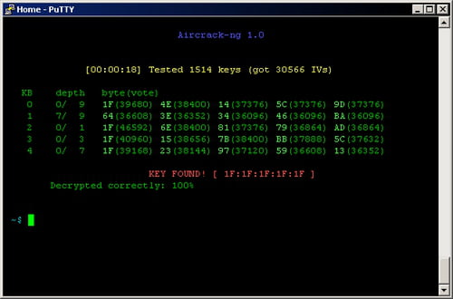

Explication
Les attaques par force brute ou brute force en anglais permettent de trouver le nom d'utilisateur ou un mot de passe en recherchant toutes les combinaisons possibles. Pour ce faire les pirates utilisent souvent des logiciels spécialisés pour effectuer l'attaque. Ces attaques sont longues à faire car tester toutes les combinaisons possibles de chaines de caractère est long. Pour simplifier cette tâche les pirates utilisent souvent des dictionnaires. Un dictionnaire pour les attaques par force brute est un ou plusieurs fichiers qui contiennent des chaines de caractères diverses et variées pour éviter à la machine de rechercher toutes les combinaisons possibles et donc gagner du temps. En plus des dictionnaires, les pirates utilisent aussi des algorithmes qui permettent de mettre certaines lettres en majuscules ou des caractères spéciaux à certains endroits. Il y a aussi des attaques par force brute inversée, ça consiste à utiliser un mot de passe qui a fuité par exemple et ensuite rechercher tous les noms d'utilisateur qui pourraient utiliser ce mot de passe, cela est pratique quand un pirate veut revendre des comptes car plus il a de comptes à vendre, plus il se fera d'argent donc s'il trouve plusieurs comptes avec le même mot de passe il pourra revendre plus de comptes. Beaucoup de pirates peuvent trouver un mot de passe en moins d'une seconde grâce aux dictionnaires. S'ils n'avaient pas eu de dictionnaire cela aurait pris plusieurs années. Des outils automatisés sont également disponibles pour nous aider à trouver les mots de passe en utilisant l'attaque par force brute (Brutus, Medusa, THC Hydra, Ncrack, John the Ripper, Aircrack-ng et Rainbow, par exemple). Ces outils agissent contre de nombreux protocoles informatiques (FTP, MySQL, SMPT et Telnet par exemple) et permet à des pirates de craquer des modems sans fil, d'identifier des mots de passe faibles, de déchiffrer les mots de passe en stockage chiffré, de traduire des mots en leet speack (« don'thackme » [nemepiratepas] devient « d0n7H4cKm3 », par exemple), d'exécuter toutes les combinaisons de caractères possibles et d'opérer des attaques par dictionnaire. Les protocoles cités précédemment sont des protocoles qui ne sont pas ou très peu sécurisé donc les mots de passes peuvent se trouver plus facilement.
Pour effectuer les attaques par force brute, on utilise la puissance du processeur et ses différents cœurs mais on utilise aussi le processeur graphique qui peut effectuer beaucoup d'action, donc en utilisant le processeur et le processeur graphique, les attaques par force brute sont plus rapides. Le processeur graphique peut cracker un mot de passe environ 250 fois plus vite que le processeur. Pour se protéger des attaques par forces brute, il faut utiliser un mot de passe avec beaucoup de caractères, avec des majuscules, minuscules, chiffres et caractères spéciaux, et de préférence supérieur à 10 caractères. On peut aussi utiliser de la randomisation de mot de passe qui va générer un mot de passe complexe et aléatoire.
Exemple de générateur de chaines de caractères en javascript :

Logiciel aircrack-ng en ligne de commande :
Il est aussi possible de chiffrer les mots de passe et de préférences avec le plus de bits possible (128 bits ou 256 bits). Quand un mot de passe est chiffré, il existe un hash qui correspond à ce mot de passe et ce hash peut être composé d'une clé publique et une clé privée qui serviront à décrypter le mot de passe. Sans ses hash là le mot de passe ne peut pas être décrypté donc les hackers utilisent l'attaque par force brute pour essayer de trouver les clés de décryptages mais vu qu'elles sont longues et complexes et sécurisé il est très compliqué voir presque impossible de trouver des clés de hash avec l'attaque par force brute. La majorité des gens ne hash par leurs mots de passes car tout le monde ne connait pas l'existence des hash et il est aussi plus compliqué à mettre en place que de simplement écrire un mot de passe. Une méthode qui permet de limiter ces attaques est de mettre un nombre d'essais maximum sur un certains intervalle de temps comme par exemple les cartes bancaires qui limitent les erreurs de mot de passes à 3 tentatives maximum avant que la carte soit bloquée. Sur un VPS (machine serveur), il est possible d'utiliser fail2ban et de le configurer pour bannir l'IP de la personne qui essaye de se connecter si elle fait un mauvais mot de passe 3 fois de suite en moins d'une minute.
Sources :
- malekal.com
- wikipedia.org
- kaspersky.fr
- equinode.com
- connaissances